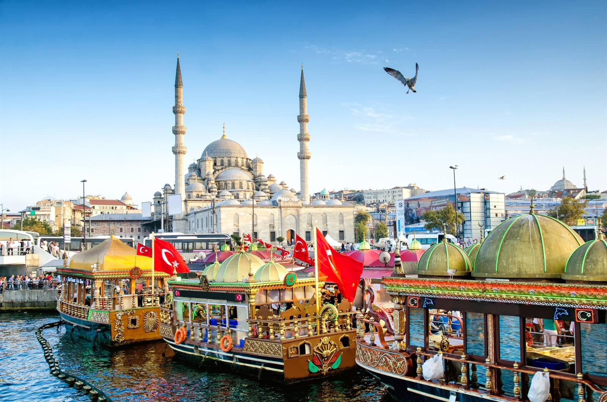

HOME |
HISTORIA |
CULTURA |
GEOGRAFIA |
DADOS |
CURIOSIDADES |
TURISMO |
CONTATO |
Turquia! Türkiye!

HINO NACIONAL DA TURQUIA
A Turquia, um país que se estende pela Ásia e Europa, é marcada por uma rica herança histórica, misturando influências orientais e ocidentais. Suas cidades icônicas, como Istambul, exibem uma arquitetura magnífica que reflete sua história multicultural. Com pontos turísticos como a Mesquita Azul e a Capadócia, juntamente com suas belas praias e paisagens naturais deslumbrantes, a Turquia é um destino cativante para os viajantes em busca de uma experiência cultural e histórica única.
Lucas Alves 2024 - ©Todos os direitos reservados.